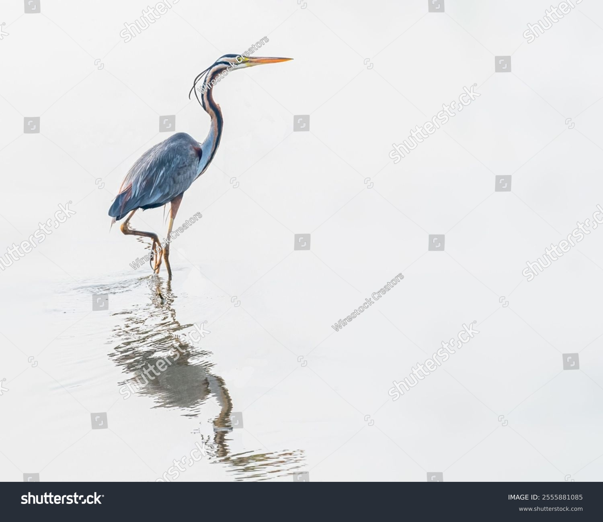

O mnie
Anglistka z wykształcenia i project managerka z praktyki. Ponad 10 lat doświadczenia pracy w prawdziwie międzynarodowym środowisku — USA, Izrael, Unia Europejska, Indie. Przez wiele lat w eBay.

Skąd to wszystko
Na tę decyzję byłam już gotowa od dawna. Gdy wsiadłam do samolotu, wiedziałam, że całe moje życie wywróci się do góry nogami. Po kolejnych 10 miesiącach zaczęłam pracę w jednej z najlepszych firm w Dolinie Krzemowej.
Jako 24-latka myślałam, że Stany to taka Polska, tylko po angielsku. Otóż nie. Pierwszym szokiem kulturowym były szerokie pasy autostradowe i to, że wszystko można załatwić bez problemu, nawet przez telefon. Drugim szokiem było to, że podstawowym pytaniem w small talku było: „gdzie pracuje twój mąż?".
Od dziecka interesowałam się innymi. Inną kulturą, innym językiem, innym stylem życia. Na angielski zaczęłam chodzić w przedszkolu, w gimnazjum — francuski, studia na filologii angielskiej (plus łacina). W ostatnich latach uczyłam się hebrajskiego. Obecnie ćwiczę swój amerykański akcent.
Doświadczenie zawodowe
Gdy znalazłam pracę w jednej z najlepszych firm w Dolinie Krzemowej, wiedziałam, że od teraz moje życie wskoczy na nowy tor. Praca dała mi możliwość obserwowania ludzi nie tylko ze Stanów, nie tylko imigrantów, ale też z Wielkiej Brytanii, Australii, Kanady, Francji, Hiszpanii, Niemiec, Izraela. A to był dopiero początek.
Po kilku latach wróciłam do Polski, kontynuując moją pracę w firmie i dołączyłam do zespołu w Izraelu. Tam, zanim przyjęli mnie jak swoją, musiałam udowodnić swoją wartość. Potem okazało się, że mamy ze sobą wiele wspólnego. Wraz z Izraelem dołączyły Indie, Bułgaria, Rumunia.
Nigdy nie pracowałam w polskiej firmie. Zaraz po studiach — brytyjska firma, potem szwedzka. Po romansie z krakowskimi korporacjami ukończyłam kurs międzynarodowego nauczyciela języka angielskiego w British Council. Nauczyłam się tam, jak przekazywać wiedzę w strawny sposób.
Pytania, które prowadziły do kursu
Przez całe moje międzynarodowe życie zadawałam sobie to pytanie. Co sprawia, że ktoś myśli, że jestem niezaangażowana w pracy, dopóki nie zobaczy jakości mojej wykonanej pracy? Dlaczego ktoś myśli, że jestem zimna albo że nie wiem, jak się zachować?
Funkcjonuję w wielu kulturach. Dlatego w Polsce nie zawsze moje spóźnienie o 3 minuty ujdzie mi płazem, a w Izraelu jest odbierane za nadgorliwość i sztywność.
Te i inne pytania skłoniły mnie do tego, by nie opierać się tylko na intuicji, ale żeby zgłębić temat od strony naukowej — aby teoria pomogła mi nazwać to, co wcześniej było tylko przeczuciem.
Skąd wziął się kurs
Kurs nie jest zbiorem prostych zasad. Nie znajdziesz w nim „jeżeli zrobisz tak, Twoja sprzedaż wzrośnie o X%" ani „jak dostosować się do innych nacji i stracić własną kulturę".
Kurs poszerza Twoją świadomość na temat własnej kultury i uczula na niuanse. Nic nie jest czarno-białe, a podstawowa odpowiedź na pytanie „jak?" brzmi: to zależy.
Łączę w nim badania i teorię, doświadczenie zawodowe oraz refleksję nad własną drogą — po to, żebyś mógł/mogła mówić spokojniej, pewniej i bez ciągłego autocenzurowania się.
Zapisz się na listę oczekujących →